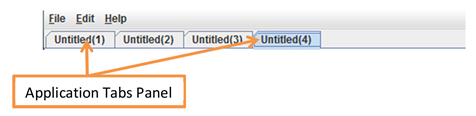

|
|
|
MENU BAR
Menu bar consists of
Menu File contains:
Menu Edit contains:
Menu help menu opens help window.
APPLICATION TABS
Below the main menu the application tabs can be visible. Each VisNow Application (workspace) opens in a new tab. The tabs in the bar enable user to switch between applications and close the application with “x” button on the tab.

Aditionally the tab can show the status icon of error () or warning (), meaning that the network in this application has some problem. A warning means that one of the modules in the connected network has no data on the required input port. An error means that one of the modules in the connected network has wrong data on the required input port. Each status is also represented by midule status icon and by respective message in the status bar.
The tab title is the application title. By default each application is untitled until it was saved. When the application is saved the tab shows its name.